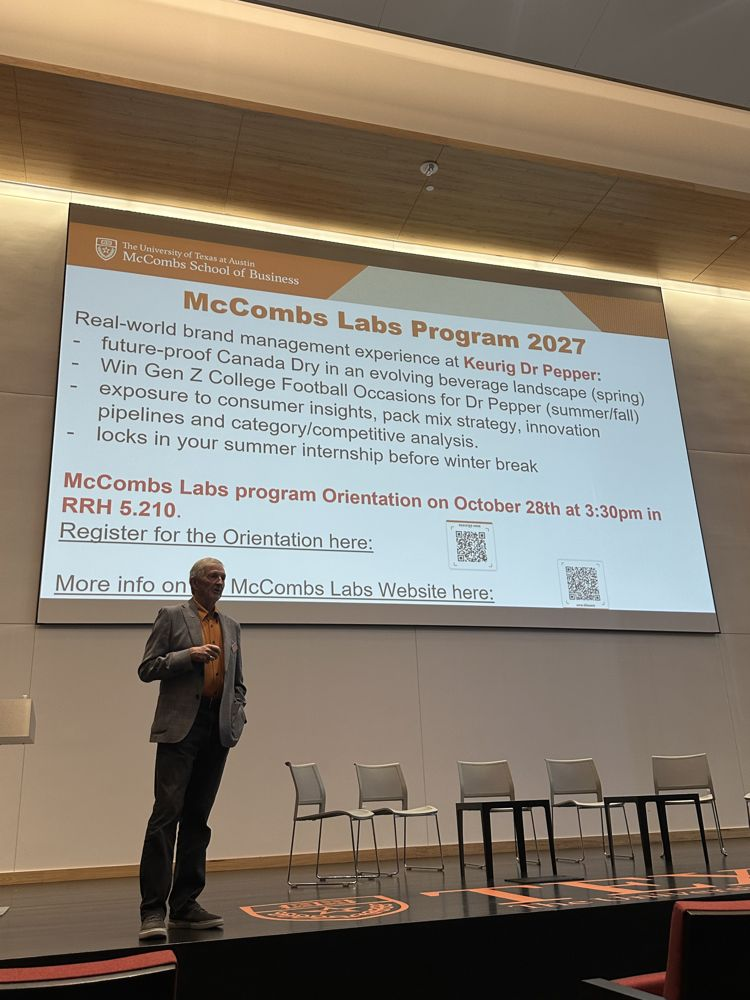
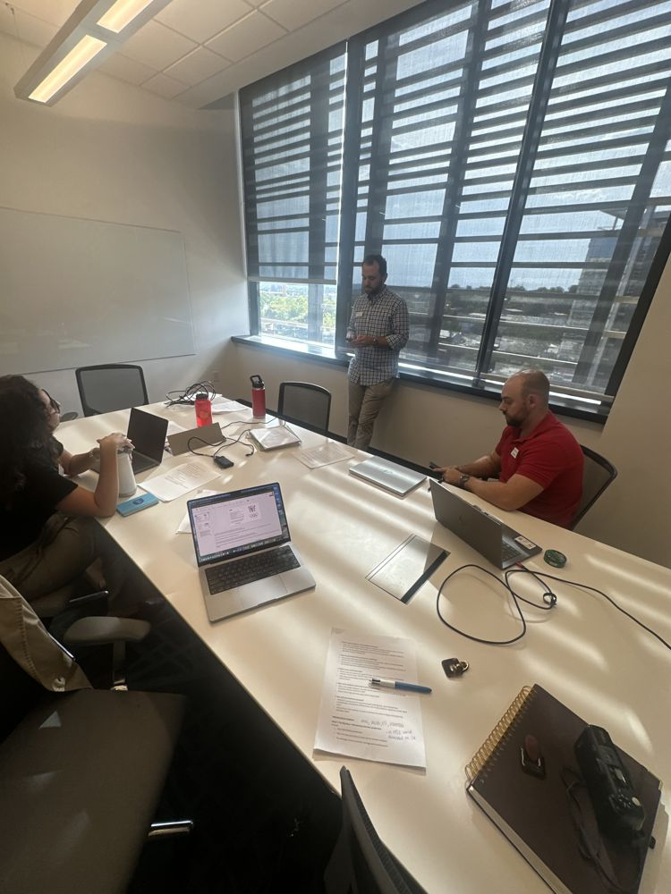

I spent six years handing insights to marketers. At Marketing Camp, I finally got to hear what the best ones do with them.
In September I spent a day at the McCombs Marketing Camp. We heard from a panel of marketers in B2B tech, gaming, beverages, and a sustainability startup, a veteran marketing executive from snacks and fast food, and the head of marketing at a pasture-raised egg brand. The day ended with a live KFC case.
A snack launch that started with a magazine article

The executive told the story of a snack launch that began with a magazine article. Parents wanted more whole grains, and their kids didn't want the taste. That tension became a product the company rejected five times internally before it launched and grew into a major line. Later, at two fast-food chains, the same pattern repeated: a sharp insight first, then the creative. His advice was to go sit with your own data before you ask for a big research budget. As someone who has spent years on the research side, I loved hearing a senior leader say that the best insights often come from digging into the data.Positioning has to be true
The egg brand's marketing leader defined marketing as "getting people to think differently in order to generate demand," and was firm that positioning has to come from truth, not a brainstorm. The brand prints the name of the farm on every carton of its pasture-raised eggs and links to a video of it, proof that competitors can't easily copy. When the brand faced a wave of misinformation online, the team didn't fight back. They checked the facts, found that most critics weren't even customers, answered sincere questions directly, and watched sentiment recover. As she put it, "You exist in the woods. The storms are always coming."
Moving fast without breaking the brand
The panel kept coming back to one tension: how to move fast enough to stay relevant without chipping away at the brand. Their answer was clear brand guardrails. When everyone knows exactly what the brand stands for, teams and agencies can act on a social moment the same day without escalating every call, and save the slower, careful work for things that last, like packaging or a major campaign.
A beverage marketer showed what that clarity looks like across a whole portfolio. Each brand owns a different occasion, like a quiet night in versus a social gathering. That keeps the brands from competing with each other. As one panelist put it, much of leadership is deciding what not to do.
A good brief is a good prompt
The egg brand's marketing leader pointed out that a great brief spells out the problem, the behavior you want to change, and the core insight, which is also what makes a good AI prompt. One executive described AI as a way to get to 85% of an answer faster, then check everything, because it will confidently get things wrong. Another speaker warned that presenting AI-generated work you don't understand gets exposed the moment someone asks a question.
The KFC case
The day ended with a live brand strategy case from KFC. My team had one hour to prepare and five minutes to present to a panel of judges, who dropped into our room halfway through to test our thinking.

With no time to perfect anything, we had to pick a direction early, use frameworks as scaffolding rather than a checklist, and answer as brand managers rather than as customers. When the judges came by with questions, we had to explain our reasoning on the spot. I learned how much of presenting with confidence comes from being clear on your one big idea, so you can think on your feet when the questions come.Your turn. Where do you think my team placed?
Third! A podium finish on one hour of prep.
Honestly, I left energized! It made me feel like six years on the research side was a head start. Nearly every speaker ended on the same advice: stay curious, and build relationships while you're still in school.